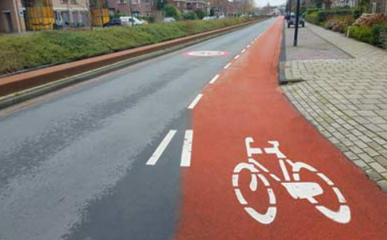
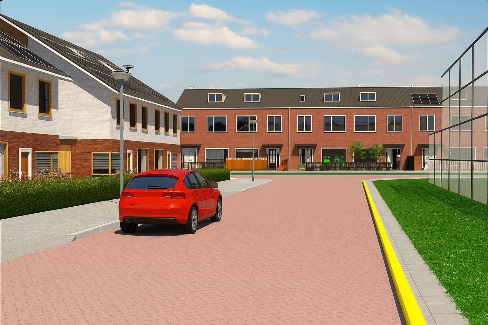

Auto Theorie – Verkeerstekens
Verkeerstekens
Verkeerstekens laten zien hoe je je moet gedragen in het verkeer. Ze bestaan uit:
- Stoplichten
- Markeringen op de weg
- Verkeerssignalen
Rangorde van belangrijkheid
- Instructies van bevoegde functionarissen
- Stoplichten
- Verkeerssignalen en markeringen
- Verkeersvoorschriften
Wegmarkering
Onder wegmarkering verstaan we alle aanduidingen op het wegdek. Voorbeelden hiervan zijn haaientanden en zebrapaden. Denk daarnaast ook aan:
- pijlen
- tekens
- lijnen
- strepen
Fietsstrook
- Een fietsstrook is uitsluitend bedoeld voor fietsers en bromfietsers.
- Je mag niet stoppen op een fietsstrook of direct naast een fietsstrook op de rijweg.
- Je mag voorsorteren of uitwijken op een fietsstrook met een onderbroken lijn, maar niet op een fietsstrook met een doorlopende streep.

Het is een fietstrook
Fietssuggestiestrook of suggestiestrook
- Een suggestiestrook lijkt op een fietsstrook maar heeft geen witte aanduiding in de vorm van een fiets.
- Een suggestiestrook bezit geen wettelijke betekenis.

Suggestiestrook (Je mag wel stilstaan op een suggestiestrook)
Voetgangersoversteekplaats of zebrapad
Een voetgangersoversteekplaats (VOP) wordt ook wel zebrapad genoemd.
- Geef altijd voorrang aan voetgangers en gehandicaptenvoertuigen die bezig zijn over te steken, of duidelijk van plan zijn dit te doen.
- Inhalen vlak bij een zebrapad is niet toegestaan.
- Het is verboden onnodig stil te staan of te parkeren binnen 5 meter van een zebrapad.

Voetgangeroversteekplaats
Doorgestrokken streep
Het is verboden om over een ononderbroken streep te rijden. Daarom is inhalen op dit soort weg niet toegestaan.

Doorgetrokken streep
Onderbroken streep
Het is verboden om over een ononderbroken streep te rijden. Daarom is inhalen op dit soort weg niet toegestaan.

Onderbroken streep
Doortrokken en onderbroken lijn
Wanneer de ononderbroken lijn zich aan jouw zijde van de rijbaan bevindt, mag je de lijn niet overschrijden, maar aan de andere kant is dat wel toegestaan.

Doorgetrokken en onderbroken streep
De doorgetrokken streep zit niet aan jouw kant van de weg. Je mag op deze weg dus inhalen.
Haaientanden
Verleen voorrang aan bestuurders op de kruisende weg.

Haaientanden
Verdrijvingsvlak of puntstuk
- Het is verboden om over een verdrijvingsvlak of puntstuk heen te rijden.
- Een verdrijvingsvlak geeft meestal aan dat een rijstrook eindigt.
- Je mag uitsluitend over een puntstuk rijden wanneer de spitsstrook geopend is en het puntstuk op die spitsstrook ligt.

Puntstuk
Zigzag-streep
Deze markeringen fungeren als waarschuwing voor gevaar. Ze worden bijvoorbeeld aangebracht bij een:
- risicovolle kruising
- oversteeklocatie
- wegversmalling

Zigzag-strepen
Busstrook
Op een busstrook staat het opschrift 'BUS' of 'LIJNBUIS'.
- Bevindt zich direct naast de rijbaan.
- Het is verboden om op een busstrook te rijden.

Busstrook
Busbaan
Op een busbaan staat het opschrift 'BUS' of 'LIJNBUS'.
- Afgescheiden van de overige rijstroken.
- Het is niet toegestaan om op een busbaan te rijden.
Gele onderbroken lijn
- Parkeren is niet toegestaan.
- Passagiers laten in- of uitstappen en goederen laden of lossen mag hier wel.
- Geldt enkel voor de kant van de weg waar de onderbroken lijn is aangebracht.

Gele onderbroken streep
Gele ononderbroken lijn
- Het is verboden om stil te staan of te parkeren.
- Van toepassing uitsluitend aan de zijde van de weg waar de lijn is aangebracht.

Gele doorgetrokken streep
Verkeerslichten of stoplichten
- Groen: doorrijden
- Oranje: stoppen, of verder rijden als stilstaan redelijkerwijs niet mogelijk is
- Rood: halt houden

Stoplicht
Bij een rond verkeerslicht mag je rechtdoor rijden, maar soms ook naar links of rechts afslaan. Wanneer je afslaat, moet je extra goed opletten en al het doorgaande verkeer voorrang geven. Het kan bijvoorbeeld voorkomen dat een rechtdoor rijdende fietser tegelijkertijd groen licht heeft.
Verkeerslicht met pijl
- Bij een verkeerslicht met een pijl hoef je normaal gesproken geen rekening te houden met kruisend verkeer wanneer je het kruispunt passeert.
- Het sein van een stoplicht met een pijl geldt uitsluitend voor de richting die door de pijl wordt aangegeven.
- De pijl kan naar links, naar rechts of rechtdoor wijzen.

Stoplicht met pijl
Verkeerslicht bij een spoorwegovergang
- Een rood knipperlicht betekent dat je moet stoppen.
- Een wit knipperlicht geeft aan dat je mag doorrijden.

Witte licht

Rode licht